Hello Beautiful!
This is a sidebar navigation responsive template built off of Bootstrap 3.0 and simple sidebar template. It includes anchors, scroll spy, smooth scroll, and Awesome icon fonts.
This application template build in using Ionic 2 Framework with applied i18n that is support multiple language. Now four languages applied in this app, languages are- default English, Spanish, Chinese, Arabic(RTL Support). Build In multiple theme concepts like Social media, Ecommerce, Business Logic, Map etc. Full application organised very simple design concepts with proper project structure, best practices. We applied latest version of Ionic 2, Angular 2, Typescript with i18n.
- Created: 21/02/2017
- By: Afroza Yasmin
- Email: afroza021@gmail.com
Thank you for purchasing my theme. If you have any questions that are beyond the scope of this help file, please feel free to email via my user page contact form here. Thanks so much!
Ionic Viewer
Preview this application on IOS and Android using Ionic View. Please download this Ionic View application from - Ionic Viewer. Use the app ID - a3a6e8a9
This app support all the platform - Android, IOS, Windows
- Landing Page
- Login Page
- Signup Page
- Forget Password
- Profile Page
- Calendar
- Location Google Map
- Chart
- Ecommerce
- Latest News
- Chat
- Components
- About Us
- Contact Us
- Settings
- Search
- Logout
- Technologies- Ionic 2 + Angular 2 + Typescript
- Latest release of Ionic 2 and Angular 2 version
- 37 components
- Support multiple language I18n. Implemented by Ionic 2 - translator developed from Angular 2 (ng2-translate ).
- RTL Support
- Full authentication of Landing, Login and Registration page.
- Side menu support with Icon and company logo
- User Profile included with social options - Timeline, About Me, Friends, and Gallery tabs
- Calendar component implementation of Angular 2 full calendar
- Google map components added multiple view options detect current location
- Chart components added multiple chart and implemented by Chart.Js
- Ecommerce Module( Category wise product list and cart options)
- Latest news component slided support
- Chat module
- Awesome components page design
- About us and contact us components
- Language change options added into the Settings component
- Search and logout
- Very easy to customize
- Support full page Image viewer of any image. Implemented from - Image Viewer
The landing page contains three option naming registration, login and skip. You can create an account by clicking on registration button which will take you to the registration page and by providing username, email, password and reconfirming password you can create the account. For entering into your profile you need to click on Login button. At login page, you need to provide registered email and password. If you forget your password anytime then there have option to retrieve your password by clicking on Forget Password which will create a pop up box for entering your email.
Preview Samples
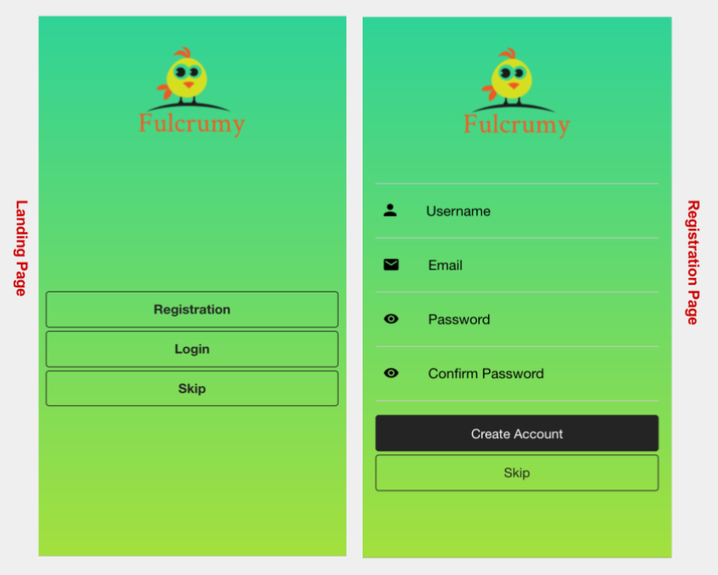 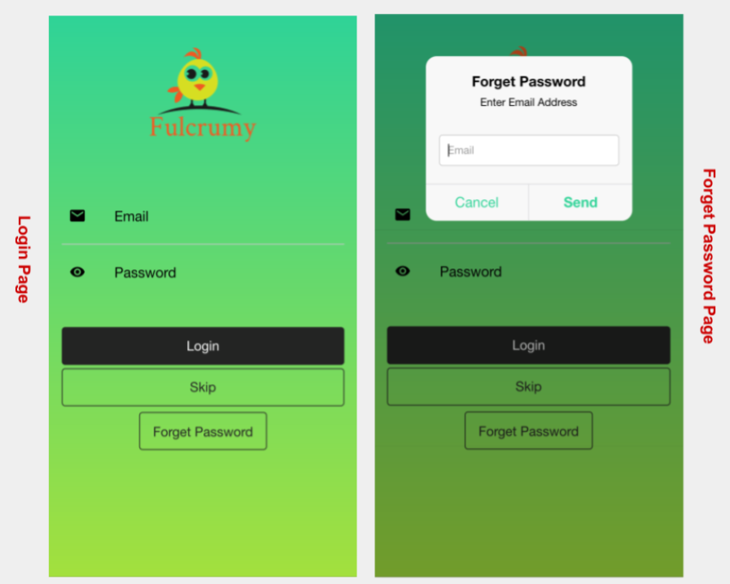By default, side menus are hidden underneath their side menu content and can be opened by swiping the content left or right or by toggling a button to show the side menu.
The screenshots showing the profile pages view below. Through login one can enter into the profile page which is mixed with a number of interesting options. The header of the page contains serach option and advance menu. There have two slider view at the beginning of the page,the first slide exhibit profile picture and designation and second slide describe profile holder description. Immediate below of this there have timeline, about me, friends and gallery buttons. Timeline will show friends activities where you can give like and put your comments. About me section contains basic information, contact information and check ins. By clicking on friends button you can view your friends and can message them also. The profile gallery shows your uploaded photos and bigger photos displayed if you click on each photo. In every page of your selection there have a round size button at below right side corner and by clicking on the button you will found sharing option to social sites like Facebook, Twitter, Google plus etc.
Preview Samples
 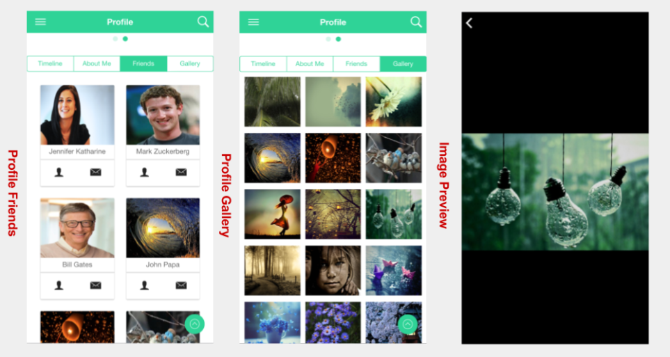
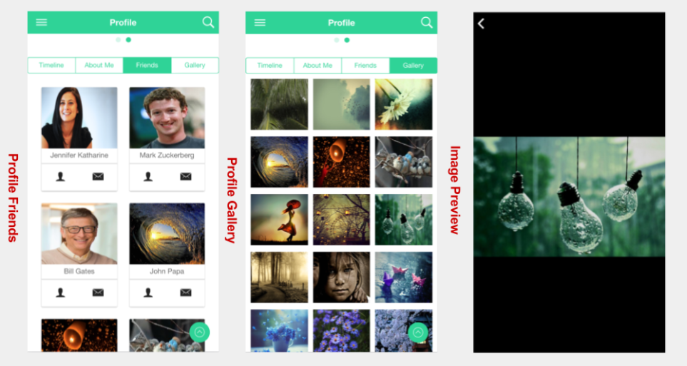
The calendar is an amazing option to see any kind of events, remind friends birthday, schedule meeting and so on.
Preview Samples

The google map can help you to see your destined location with five types of google view naming Standard Map, Silver Map, Night Map, Dark Map and Aubergine Map. When you will enter into the map that will detect your current location automatically.
Preview Samples
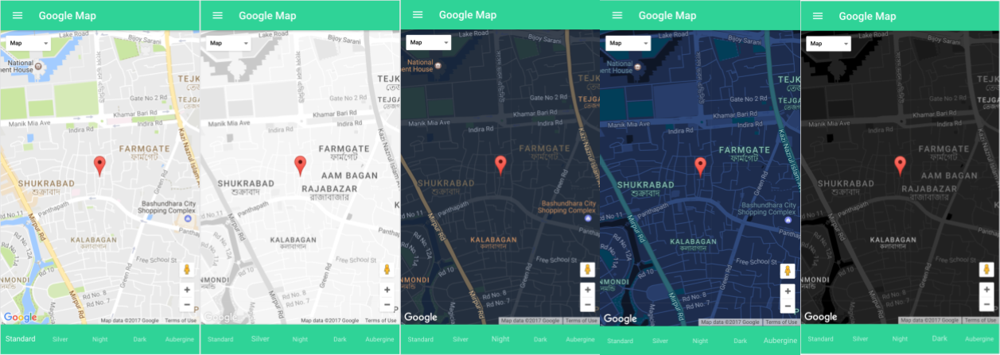The chart have six chart options naming Dynamic chart, Bar chart, Doughnut chart, Pie chart, Polar chart and Radar chart. Chart.js has been applied for describing every charts.
Preview Samples
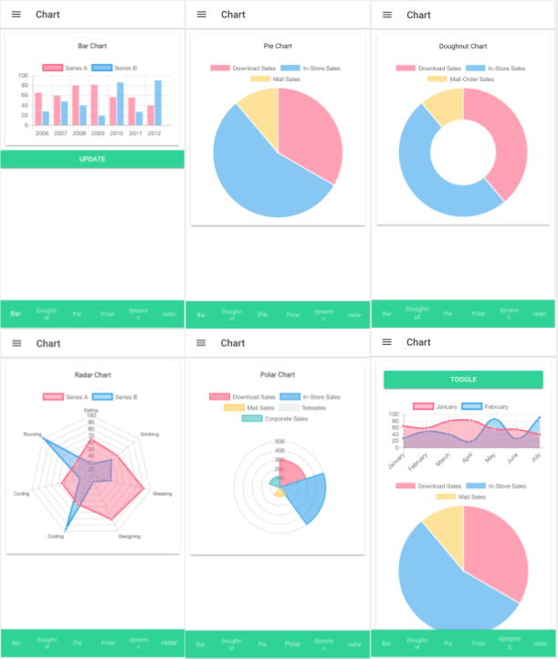The Ecommerce site is very interesting and easy to browse. There have eight categories for browse in the site are Women, Men, Electronics, Home & Garden, Fashion, Toys & Baby, Book and Latest. Each categories are functionable. By entering into women category you can see this category product advertisement. If you select any product seller to see his/her product then you will see his/her product details, price, add to cart and related product suggestions. There also have quantity selection option for purchase the product. The cart symbol of the page right side corner of header shows how many products you have putted on your cart. By clicking on the button you can keep or discard your product selections.
Preview Samples
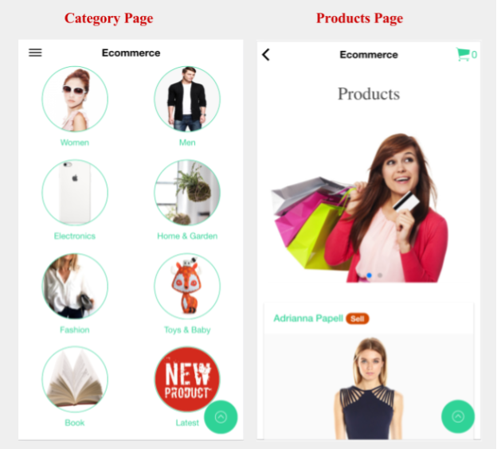 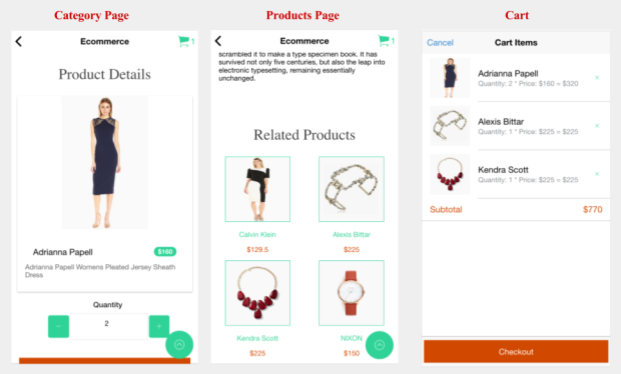The chat option allow you to chat with your friends who are in your contact list. By entering in contacts you can choose to whom you want to contact and by entering in to chat you can see messages and also can start to send message to your friends.
Preview Samples
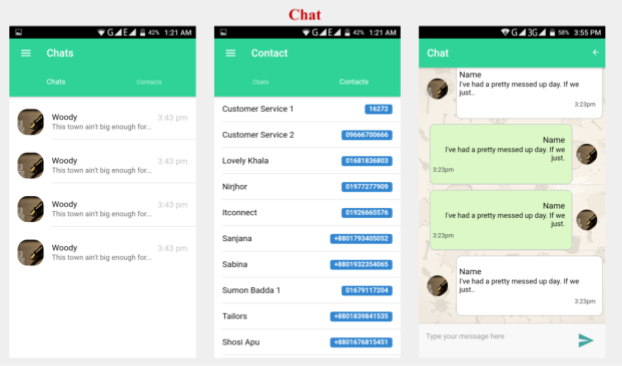This app support multiple language options that means internationalization can provide multiple language support of this application. This app suggests and applied best practice for internationalization. Initially we applied and used four(4) internationalization language for multiple language option. By default English(en) and others languages are - Spanish(es), Chinese(zh), Arabic(ar). Now stored all the json files assets folder assets/i18n.
JSON File Structure:

For multiple language support we used ng2-translate package.
Apply in Plain Html Text Page:

Preview Samples
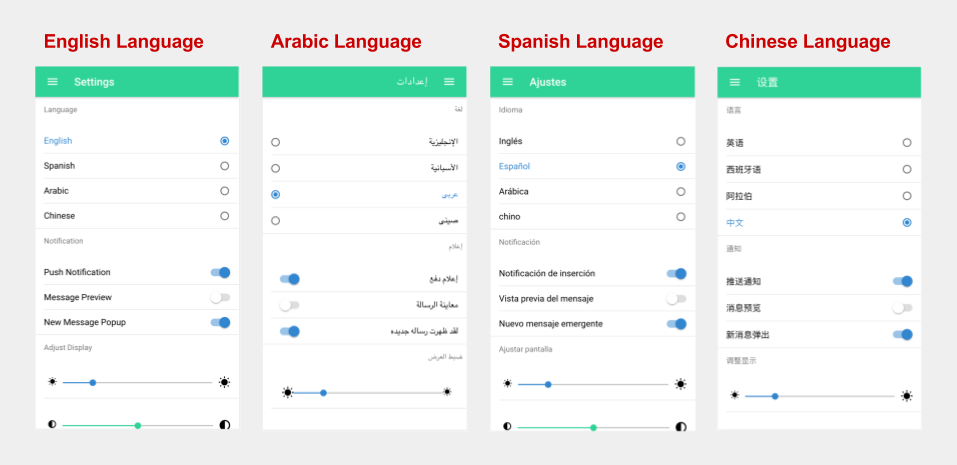Installing
To install NG2-Translate run npm install ng2-translate --save.
Set up:
Bootstrapping
To use NG2-Translate, it must first be imported and added to the imports array in the NgModule of the application.
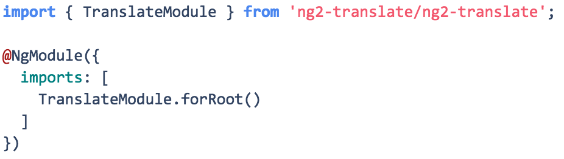Translation json files stored into the src/assets/i18n/ directory.
We create a function in app.modules.ts that returns a new TranslateLoader.
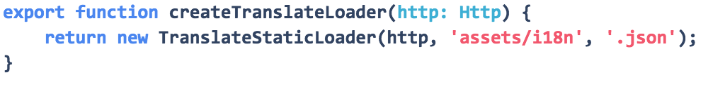And then adding this function following the NgModules imports array:
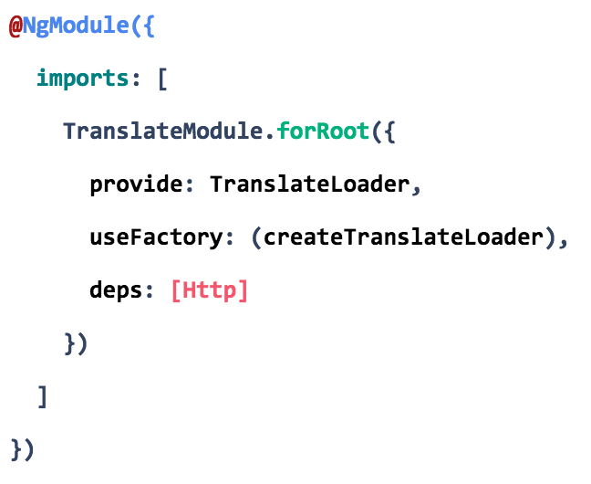Usage:
Once the above steps have been completed, we can begin to use NG2-Translate in any Ionic 2 app. The first step is to set up the translation assets. The translation assets are just json objects, as shown below:
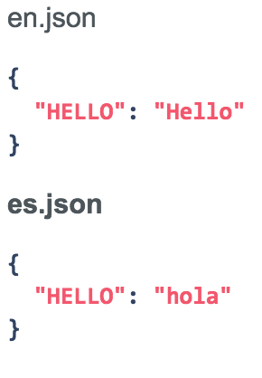Now we can translate Hello following format.
Although we can use TranslateService for translate the current language the app is using and to translate JavaScript values in an application. To use the TranslateService in your app you must first import it and set the default language.
Import TranslateService
import {TranslateService} from 'ng2-translate';
Set default language
// this language will be used as a fallback when a translation isn't found in the current language
translate.setDefaultLang('en');
To change the language the app is currently using, there’s the use method of the TranslationService.
translateService.use('en');
More Details - ng2-translate
This application fully works Right to left (RTL) support. Already we used one language option of Arabic for that case you select Arabic language option from the settings page then you can see this application all the contents or items will be work on right to left side. This is only possible for the Ionic framework that is RTL supported by default. We can use RTL option by adding this code this.platform.setDir('rtl', true) when platform ready to run.
Sample code example in app.component.ts
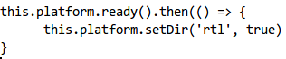Preview Samples
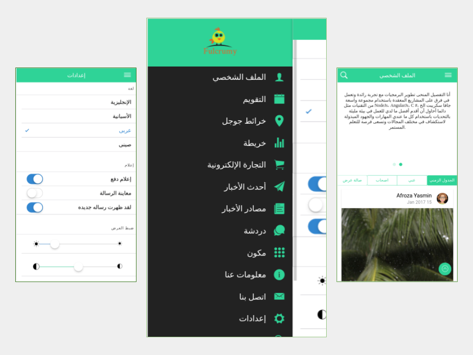Full application based on component based and every component uses its own SASS file. For that reason full app are well structured, flexible to manage. Easily override default SASS variables where possible (in app.variables.scss). app.variables.scss is used to modify the apps shared variables.
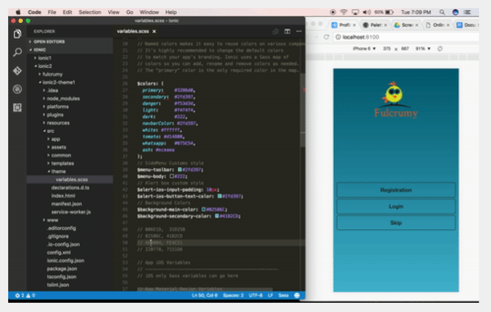Theming your Ionic App
More DetailsSass Variables
More DetailsLet's take a tour to see how the project has been structured before we start to talk about details of project.